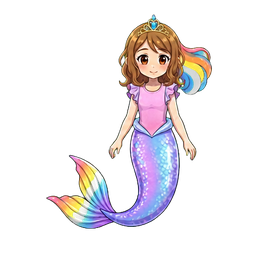
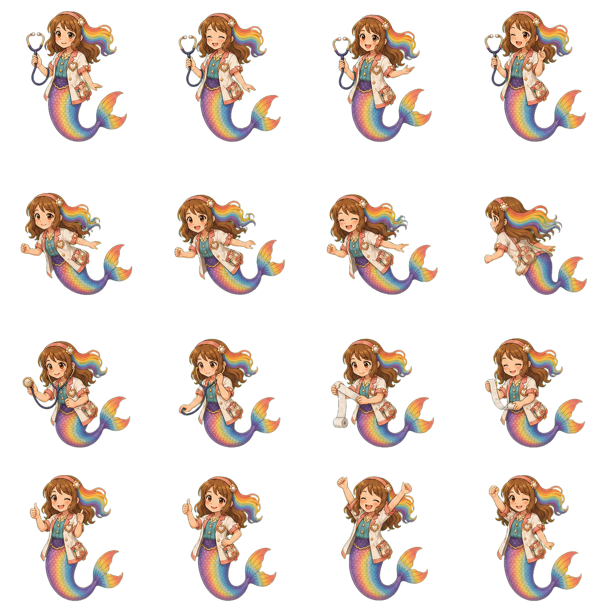
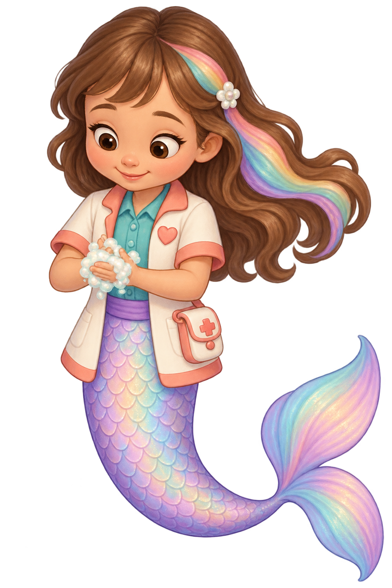

Named gap: the approved doctor work row contains examination and bandage poses, but no intact two-hand soap-washing pose. The existing painted sink is reusable.
Attempt6 reaches the source drafting floor4.5/5 and remains unbound. Exactly4.5 remains an inclusive review priority. Native-scale fit, sink/hand contact, transitions, complete action, phone, child and owner acceptance are pending. Attempts1–5 are retained as rejected drafts. No original actor art has been changed.
These original files are unchanged. The first doctor cell and its work1 cell are shown at their exact256×256 atlas regions. They are identity/pose references, not a washing loop.
Approved base-world identity

Doctor idle: cell0,0

Doctor work1: cell1,2
The owner permits rainbow and lavender-pink-purple tail colours according to the light. That variation alone is not a defect. Selection requires a readable action and continuity with the approved identity.
Attempt 1 · 3.8/5

Both hands are attached and meet in soap lather below the chest, improving the intended washing gesture. The soft rounded face rendering, fine hair highlights and glimmering scales lean toward the life-like finish the owner rejected. The fin is large relative to the approved doctor cutout, and the soft halo/fringe needs technical/native-scale inspection. This is RGBA with real zero-alpha pixels; do not incorrectly call it an opaque image. Overall source draft3.8 is rejected and remains unbound.
Flat colour bands, stronger plum contour, matte lather and smaller fin improve the storybook finish. The source remains a narrow portrait silhouette with a long low tail, instead of the approved near-square doctor cutout with its tail curling back up to the side. Head/hair width and simplified facial design also change the approved family. These identity/silhouette differences remain below the4.5 target; source4.3 rejected, despite promising finish/gesture4.6. Test no runtime binding or full action from this draft.
The upward tail curl and square canvas improve staging potential. Soft dimensional face/hair rendering returns, and the fin is one leaf-shaped fan rather than the approved connected two-lobed fish fin. A better body curve cannot compensate for the style/topology gap. Overall3.9 rejected, unbound; native source preserved.
The clear attached soapy hands and connected two-lobed fin improve the work gesture. Flat contours are stronger than attempt3. The taller older facial/body proportions, long narrow tail and predominantly pink/lavender scale field still depart from the approved compact doctor atlas with rainbow tail and right-flowing rainbow hair. Compared directly with the full approved atlas, overall4.2 remains a rejected unbound source.
The compact curved tail and rightward rainbow hair recover the doctor costume family; the joined hand lather is clear. The very large toddler/chibi head, plush dimensional cheeks, layered shiny hair and stocky tail still depart from the approved drawn atlas. This is a useful gesture draft but does not pass source identity/style,4.3 rejected. Tail hue is not itself a defect: owner2026-09-30 permits lavender-pink-purple or rainbow according to light.
Drawn brown contours, warm brown eyes/hair, modest two-hand lather and continuous two-lobed fish tail recover the identity and literal work gesture. Costume colours and attached forearms read clearly. Compared with the locally viewed approved base and doctor atlas, this reaches the source drafting floor4.5. The satchel, hair mass and upright work silhouette need a direct native-scale comparison at the literal basin; the source floor does not settle that fit, contact, transition or action. No runtime binding or owner acceptance.